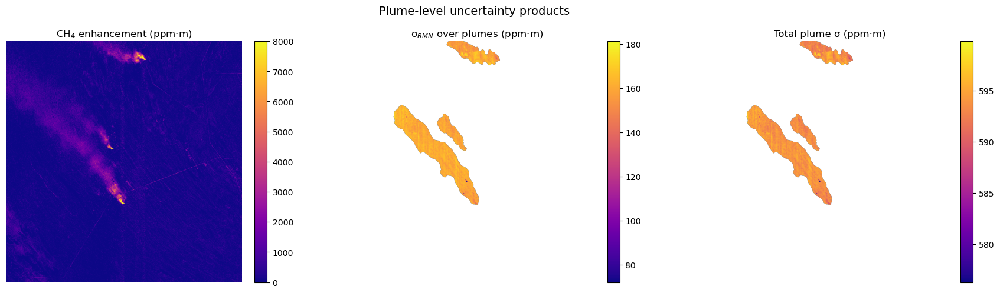

Choose your input product
For PRISMA, EnMAP, and Tanager-1, the published CH₄ route begins with Level-1 radiances. EMIT and GHGSat enter the published analysis through provider-derived Level-2 enhancement and uncertainty products. Select the route that matches the data you actually have.
EnMAP · Level-1B retrieval
Supply matching VNIR and SWIR radiance GeoTIFFs, their METADATA.XML, a CH₄ LUT, and an EnMAP SNR reference. EnMAP does not require a separate DEM.
Use the complete single-scene command. For multiple scene folders, use batch mode:
python scripts/main.py \
--satellite enmap --mode batch --gas ch4 \
--root-directory /path/to/enmap-scenes \
--lut /path/to/dataset_ch4_full.hdf5 \
--snr-reference reference_snr/enmap/L1B-DT0000001584_20220712T104302Z_001_V010502_20251017T093724Z/snr_reference_columnwise.npz \
--enmap-mf-mode full-columnEach scene folder must contain its three matching source files. The EnMAP batch runner writes scene-adjacent output folders and skips folders whose output directory is already nonempty. Review its directory processing report before rerunning an interrupted batch.
PRISMA · Level-1 and Level-2C retrieval
Supply Level-1 and matching Level-2C products, a DEM, the CH₄ LUT, and a PRISMA SNR reference. Official ZIP archives and HE5 files are accepted. The DEM NetCDF must provide lat, lon, and elev in metres.
python scripts/main.py \
--satellite prisma --mode scene --gas ch4 \
--l1 /path/to/PRISMA_L1.he5 \
--l2c /path/to/PRISMA_L2C.he5 \
--dem /path/to/dem.nc \
--lut /path/to/dataset_ch4_full.hdf5 \
--snr-reference reference_snr/prisma/20200401085313/snr_reference_columnwise.npz \
--output outputs/prisma-scene \
--prisma-mf-mode full-columnFor batch processing, select --mode batch, replace the scene inputs with --root-directory, and optionally set --output-root. See the repository’s PRISMA commands.
Tanager-1 · radiance and surface reflectance
Supply the Basic radiance HDF5 product and its companion surface-reflectance product, which supplies atmospheric water vapour, together with a DEM, the CH₄ LUT, and the Tanager SNR reference. Tanager currently supports single-scene processing.
python scripts/main.py \
--satellite tanager --mode scene --gas ch4 \
--tanager-rad /path/to/basic_radiance.h5 \
--tanager-sr /path/to/surface_reflectance.h5 \
--dem /path/to/dem.nc \
--lut /path/to/dataset_ch4_full.hdf5 \
--snr-reference reference_snr/tanager/snr_reference_columnwise.npz \
--output outputs/tanager-scene \
--tanager-mf-mode full-columnThe distributed historical Tanager reference has a documented radiance-unit consistency limitation. Review the reference catalog before interpreting absolute instrument uncertainty.
EMIT and GHGSat · provider Level-2 products
Begin with the provider’s methane enhancement and associated uncertainty rasters. These products already contain a retrieval; the published HyGAS workflow then applies common plume segmentation, IME, and flux analysis through notebooks.
Preserve the provider’s units, grid, uncertainty definition, and quality information when preparing the case. Data access and redistribution depend on the source product.
Experimental routes · EMIT Level-1B and CO₂
EMIT Level-1B: current development accepts exactly paired RAD and OBS products plus the same-scene, same-version L2A MASK for atmospheric water vapour. It requires an explicitly selected noise calibration and preserves native detector coordinates before optional GLT export. This integration has not been validated end to end. Follow the current repository instructions for its configuration and support rules.
CO₂: experimental retrieval paths exist for PRISMA, EnMAP, Tanager-1, and EMIT, using a compatible CO₂ LUT. The notebooks support segmentation quality assurance, but CO₂ background-clutter quantification, total uncertainty, IME, flux, and independent quantitative validation are not implemented. The published methane paper does not validate this extension.
Select a matched filter
The paper names the background-statistics strategy; the CLI selects it through a sensor-specific option. These EnMAP examples use actual CLI arguments.
| Method | Arguments | Background model |
|---|---|---|
| CMF | --enmap-mf-mode srf-column --k 1 | Scene-wide statistics with column-wise spectral targets. |
| CTMF, k = 3 | --enmap-mf-mode srf-column --k 3 | Separate statistics for three spectral clusters. |
| CWCMF | --enmap-mf-mode full-column | Statistics and targets for each detector column; --k is ignored. |
For PRISMA use --prisma-mf-mode; for Tanager use --tanager-mf-mode, with the same selections. The CLI default is srf-column. Set full-column explicitly to follow the primary reference configuration in the published CH₄ cases.
The additional advanced and jpl modes are research options. Record the method, spectral window, reference file, and cluster count when comparing results. For CH₄, the default spectral window is 2100–2450 nm; change it with --min-wavelength and --max-wavelength.
Read the output files
PRISMA, EnMAP, and Tanager retrievals write sensor-specific GeoTIFFs and a processing report. Use the report to connect each map to its source and configuration.
| Output pattern | Interpretation |
|---|---|
*_MF.tif | Gas enhancement ΔX in ppm·m: concentration integrated along the optical path. |
*_MF_uncertainty.tif | Instrument-noise uncertainty σRMN in the same enhancement units. |
*_CL.tif / *_classified.tif | Technical labels for the selected matched-filter mode. These are not plume polygons. |
*_RGB.tif / *_rgb.tif | RGB scene context. |
processing_report.txt | Input paths, parameter choices, and output paths. |
*_MF_sensitivity.tif | Additional sensitivity output for PRISMA and EnMAP in jpl mode. |
Keep ΔX in ppm·m distinct from a mixing-ratio enhancement in ppb and from a flux in t/h. Some historical analysis figures use converted ppb values; preserve the documented conversion and units when reproducing those figures.
Use an SNR reference
The repository includes column-wise reference-SNR NPZ files for propagating radiometric noise. Supply the matching sensor reference with --snr-reference; you do not need to download its calibration scene or regenerate PCA for a first retrieval.
You can also set PRISMA_SNR_REFERENCE, ENMAP_SNR_REFERENCE, TANAGER_SNR_REFERENCE, or EMIT_SNR_REFERENCE. An explicit CLI path makes a saved command easier to reproduce.
These are selected project references, with scene-specific domains and generation methods. They describe radiometric noise and do not include surface clutter, target error, or the complete plume/flux uncertainty. Transferring a reference across processing builds or epochs requires scientific assessment.
Read the reference catalog and known limitations for acquisition identifiers, spatial selections, Tanager’s historical ROI and unit caveats, and experimental EMIT support. The machine-readable catalog records provenance and hashes.
Continue from enhancement to flux
A methane-enhancement retrieval is the first part of the analysis. The case-study notebooks add the plume definition, background treatment, and wind assumptions needed to interpret emissions.
- Review the enhancement and scene context. Inspect spatial structure, possible artefacts, and the selected retrieval configuration.
- Segment and review the plume. Scale-aware criteria are expressed in physical units and adapted to the sensor’s ground sampling distance. Keep the final mask and its settings.
- Estimate background clutter. For Level-1 HyGAS retrievals, use plume-free pixels with continuum spectra similar to the surface beneath the plume to estimate σsurf.
- Form total enhancement uncertainty. Combine instrument and background terms as σtot = √(σRMN² + σsurf²). Provider Level-2 products retain their documented uncertainty treatment.
- Estimate IME and flux. Propagate enhancement uncertainty to Integrated Mass Enhancement, then use the effective-wind formulation with a wind input and its uncertainty. Report the mask, retrieval configuration, and wind assumptions with the result.


The retrieval CLI supplies σRMN. The reviewed downstream workflow supplies the background-aware uncertainty and plume-to-flux analysis shown here. Use Buenos Aires as an end-to-end published example, or follow the paper-to-notebook map for the relevant scientific steps.
Resolve common issues
Python cannot import osgeo or GDAL
Activate hygas and repeat the GDAL import check. GDAL’s Python bindings must match the active interpreter. Use the curated environment rather than mixing bindings from another Python installation.
The command reports missing inputs
Run from the repository root and replace the example paths. Check the input list for your sensor: PRISMA needs L1 and L2C; EnMAP needs matching VNIR, SWIR, and XML; Tanager needs radiance and companion surface reflectance. PRISMA and Tanager also require a DEM. Check the gas-specific LUT path.
A batch run skips a scene
The EnMAP batch runner skips a scene if its output folder already contains files. Inspect the directory processing report and the existing files before choosing a fresh output location or moving an incomplete result aside.
A method change produces different maps
Compare the method, spectral window, cluster count, SNR reference, and source-product version. Scene-wide, clustered, and per-column background models can yield different results. Keep each configuration in a separate output directory and interpret comparisons with the scene’s artefacts and background in mind.
The uncertainty map does not explain all visible variability
*_MF_uncertainty.tif contains the instrument contribution. Follow the downstream uncertainty workflow for surface clutter and plume-level propagation, and inspect the reference limitations. A small instrument term alone does not establish retrieval accuracy.
A notebook references a missing local folder
Case-study notebooks preserve the scientific configuration, including local input paths. Obtain the required products and adapt those paths before running. Large scene inputs are excluded from Git. Use the frozen paper release for saved publication outputs; development notebooks intentionally omit them.